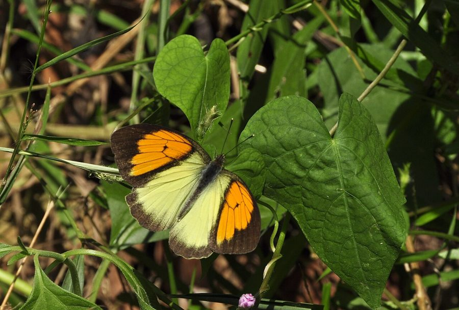

येलो ऑरेंज टिप तितलीYellow Orange Tip
Ixias pyrene · Pieridae · INS-0123

- Scientific name वैज्ञानिक नाम
- Ixias pyrene (Linnaeus, 1764)
- Family कुल
- Pieridae
- Hindi हिंदी
- येलो ऑरेंज टिप तितली
- Local names स्थानीय नाम
- yellow orange tip, tip
- Status here यहाँ की स्थिति
- native
- Movement आवागमन
- Resident, here all year
- Known from कहाँ दर्ज
- Others have published records from the wider Awadh–Purvanchal plain, none yet from Basti–Ayodhya अवध–पूर्वांचल से दूसरों के प्रकाशित अभिलेख, बस्ती–अयोध्या से अभी नहीं
- IUCN IUCN
- not evaluated
- Review समीक्षा
- audited and independently read
When to look कब देखें
Present all year. साल भर मौजूद।
Tell it apart from इनसे अलग पहचानें
येलो ऑरेंज टिप तितली / Yellow Orange Tip
Ixias pyrene (Linnaeus, 1764) — Pieridae
येलो ऑरेंज टिप तितली — यह एक छोटी सफ़ेद और पीली तितली है जिसके पंखों की आगे की ओर (forewing apex) पर उज्ज्वल नारंगी या पीला धब्बा होता है। इसके आगे के पंखों (forewings) का रंग सफ़ेद होता है जिन पर नारंगी-पीली चोटी होती है, जबकि पिछले पंख (hindwings) सफ़ेद या हल्के पीले होते हैं। यह बागों, खेतों और घास के मैदानों में आम तौर पर देखी जाती है। इसकी इल्ली सरसों और अन्य गेहूँ-परिवार के पौधों पर पाई जाती है।
Quick Identification त्वरित पहचान
| Feature | Description |
|---|---|
| Wingspan | Small; 45–55 mm |
| Ground color | White or pale cream |
| Forewing apex | Bright yellow-orange to deep orange patch (diagnostic) |
| Hindwing | White or pale yellow |
| Underside | White with greenish or grey tint; orange patch faintly visible |
| Flight | Moderate, fluttering flight |
Field tip: Look for a small white butterfly with a striking bright orange or yellow-orange tip on the forewing. The apex patch is highly visible and makes this species easy to identify among white butterflies.
हिंदी — कैसे पहचानें: सफ़ेद पंख, आगे की ओर उज्ज्वल नारंगी-पीला धब्बा।
Morphology आकारिकी
Biometrics:
| Measurement | Range |
|---|---|
| Adult wingspan | 45–55 mm |
| Body length | 15–19 mm |
| Forewing length | 20–24 mm |
| Caterpillar length (mature) | 18–22 mm |
Adult butterfly: White or pale yellow-cream base with a bright yellow-orange to deep orange patch on the forewing apex. Hindwing is white or pale yellow, unmarked. Sexual dimorphism present; females sometimes duller.
Caterpillar: Green or pale green, slender, with fine hairs, feeding on Cruciferae.
Behaviour & Ecology व्यवहार और पारिस्थितिकी
The Yellow Orange Tip is a butterfly of gardens, cultivated areas, and open scrublands with flowering plants. It has a moderate, fluttering flight and is often seen visiting flowers for nectar. Males are territorial to some extent, perching on low vegetation or flowers and taking flight to investigate passing insects. The species is attracted to a variety of wildflowers and is particularly active in warm, sunny weather.
Life Cycle / Phenology जीवन चक्र
| Stage / Season | Event |
|---|---|
| Egg | Laid on young host plant leaves; white or pale; hatches in 3–5 days |
| Larva (caterpillar) | Green, smooth; passes through 4 instars; develops over 12–15 days |
| Pupa | Suspended chrysalis; white or pale brown; emerges in 8–11 days |
| Adult | Present year-round; multiple generations annually |
Host Plants or Prey आहार
Larval host plants (Cruciferae/Brassicaceae):
- Mustard (Brassica spp.)
- Radish (Raphanus sativus)
- Turnip (Brassica rapa)
- Wild cruciferous plants
Adult nectar sources:
- Garden flowers, wildflowers, and weeds in cultivated areas
Predators / Natural Enemies शत्रु
- Dragonflies: Hunt flying adults
- Spiders: Jumping spiders and garden spiders
- Parasitoid wasps: Attack caterpillars and pupae
- Small birds: Feed on caterpillars
Agricultural / Human Relevance कृषि प्रासंगिकता
Pollinator service. The species visits a variety of garden and wild flowers, providing pollination services.
Garden butterfly. Common in home gardens and cultivated areas where host plants are present.
Expected Locally स्थानीय रूप से अपेक्षित
Not a field record. Written from published accounts for eastern Uttar Pradesh. No confirmed local sighting yet — if you have seen it, that is what the atlas needs.
अभी तक स्थानीय पुष्टि नहीं। यह विवरण प्रकाशित स्रोतों से है, किसी अवलोकन से नहीं।
The species is expected year-round throughout Basti district in gardens, cultivated fields, and areas with wild flowering plants. Look for it in vegetable gardens and field margins. The distinctive orange-yellow apex is highly visible. A photograph with date and location would confirm a local record.
Distribution वितरण
Global range: South Asia, particularly common on the Indian subcontinent.
In India: Distributed throughout from plains to lower elevations.
In Uttar Pradesh: Present in gardens and cultivated areas throughout the state.
In Basti district / eastern UP: Expected in cultivated and garden habitats year-round.
Research Questions शोध प्रश्न
Anyone can investigate these | कोई भी इन प्रश्नों की जाँच कर सकता है
- How long do Yellow Orange Tip butterflies spend foraging at a single flower? — Record feeding times on different flower types.
- Which vegetables in your garden are preferred by Yellow Orange Tip caterpillars? / आपके बगीचे में कौन सी सब्जी पर सब से ज़्यादा इसकी इल्ली पाई जाती है? — Observe egg-laying and larval development on different crops.
- Do male and female Yellow Orange Tips visit the same flowers? — Conduct observation surveys.
- How many generations of this butterfly occur in one year in your area? — Track adult emergence throughout the year.
- What percentage of caterpillars survive to adulthood on different host plants? — Collect and rear caterpillars.
Similar Species मिलती-जुलती प्रजातियाँ
| Species | How to tell apart | हिंदी | |
|---|---|---|---|
| [[great_orange_tip\ | Great Orange Tip]] (Hebomoia glaucippe) | Much larger; more orange coloration on wings; deeper orange apex | बड़ी नारंगी सिरे वाली — बहुत बड़ी, अधिक नारंगी |
| [[pioneer\ | Pioneer]] (Belenois aurota) | White with black apex containing white patch; lacks orange coloration | अग्रदूत — काली चोटी, नारंगी नहीं |
Field rule: A small white butterfly with a bright yellow-orange apex on the forewing, flying over gardens and fields, is the Yellow Orange Tip.
Taxonomy & Classification वर्गीकरण
Original description. Described by Linnaeus in 1764 as Papilio pyrene from Asian specimens. The genus Ixias comprises Asian orange-tipped white butterflies.
Subspecies. The nominate subspecies I. p. pyrene occurs throughout the Indian subcontinent.
Family and order placement. Order Lepidoptera, family Pieridae.
Phylogenetic notes. Ixias is an Asian genus of orange-tipped pierid butterflies, closely related to Anthocharis of Europe.
IUCN status rationale. Not evaluated. Common and widespread with stable populations.
Photo Gallery फोटो गैलरी
No photos yet — add field photos to media/species/yellow_orange_tip/ and run node scripts/sync_photos.js.
Photos needed आवश्यक फोटो
- [ ] Adult on flower (फूल पर)
- [ ] Wings showing orange apex (नारंगी चोटी)
- [ ] Caterpillar on host plant (इल्ली)
References संदर्भ
- Linnaeus, C. (1764). Systema Naturae, 12th ed. Laurentii Salvii, Holmiae.
- Bingham, C.T. (1905). The Fauna of British India, including Ceylon and Burma. Butterflies. Vol. 1. Taylor & Francis, London.
- Kehimkar, I. (2008). The Book of Indian Butterflies. Bombay Natural History Society, Mumbai.
- Kunte, K. (2000). Butterflies of Peninsular India. Universities Press, Hyderabad.
- Zoological Survey of India (2010). Fauna of Eastern Uttar Pradesh.
- GBIF Occurrence Data — Ixias pyrene, India (2010–2025).
Source file: species/fauna/insects/yellow_orange_tip.md